★★★★★
"Como en casa de mi abuela. Las raciones son generosísimas y el trato no puede ser más familiar. Repetimos siempre que podemos."María J. Google · Málaga
Venta tradicional en Coín (Málaga), con patio andaluz, huerta propia y el trato de familia de toda la vida.
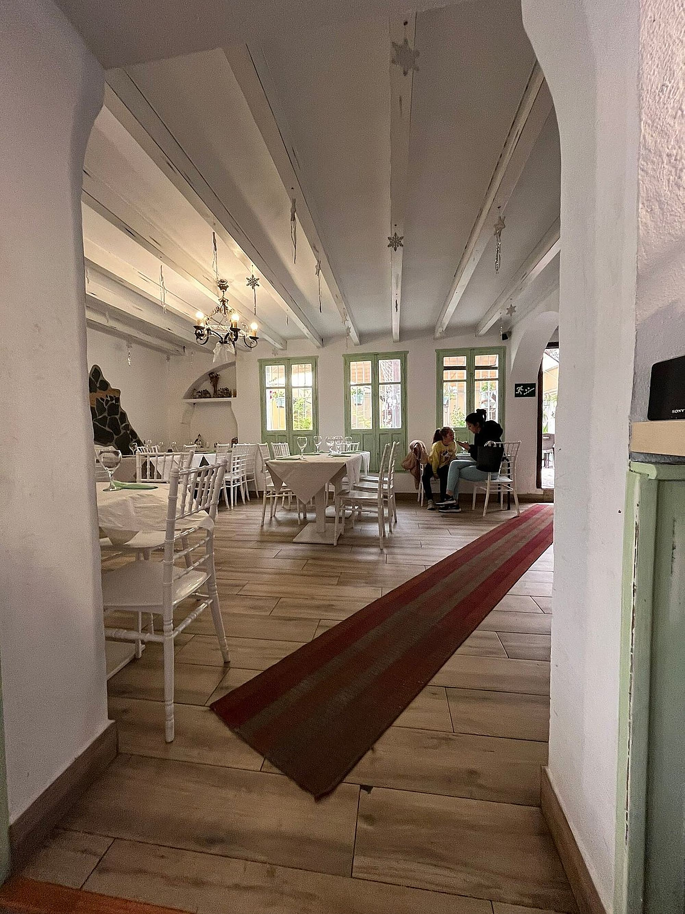
Corría 1982 cuando en el kilómetro 1,5 de la carretera de Coín a Alhaurín el Grande se abrieron por primera vez las puertas de la Finca Las Alberquillas. Desde entonces, el patio andaluz, la parra y el olor a puchero al mediodía no han dejado de recibir a familias enteras, generación tras generación.
Aquí no encontrará platos de autor ni pretensiones: encontrará la cocina de siempre, la que se hace despacio, con cariño y con lo que da la tierra. La misma que unos cuantos vecinos de Coín llevan probando desde niños y que hoy siguen trayendo a sus propios hijos.
Con el paso de los años hemos cuidado cada rincón para que siga oliendo a casa: el trato familiar, las mesas compartidas, las sobremesas que se alargan bajo la parra. Eso, en Las Alberquillas, no ha cambiado ni cambiará.
— La familia de Las Alberquillas
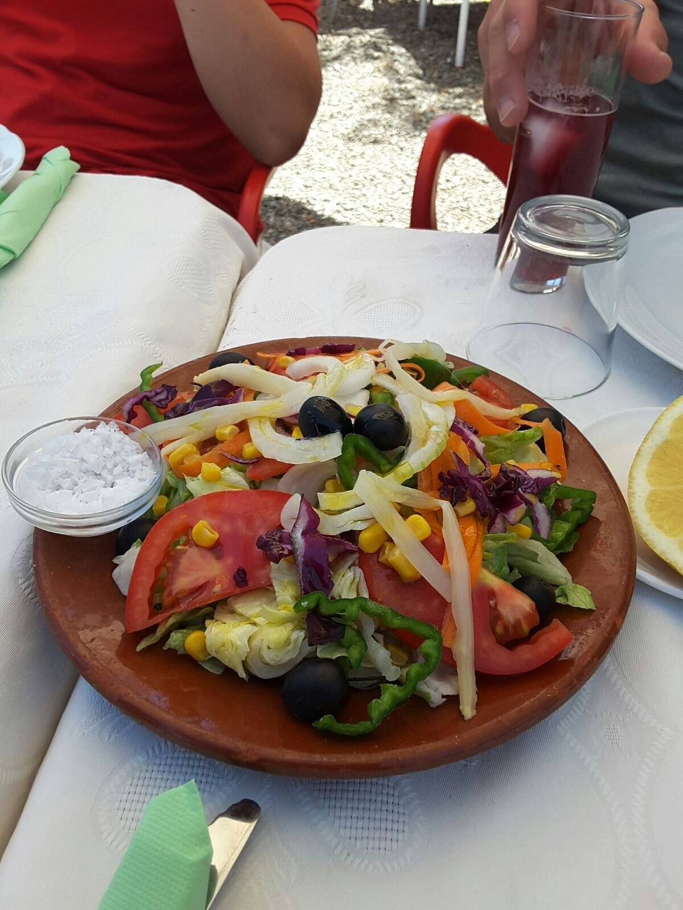
No es una frase bonita: es literal. Buena parte de lo que se sirve en su mesa se ha recogido esa misma mañana a pocos metros de la cocina.
Verduras y hortalizas de nuestra propia huerta, recogidas al punto de sazón.
Nuestras míticas patatas fritas, elaboradas con patata de la vega de Coín.
Apostamos por el producto ecológico de proximidad siempre que es posible.
Repostería artesanal hecha a diario en nuestra propia cocina, sin prisas.
Una selección de nuestros platos más queridos. La carta completa, con todas las especialidades de temporada, está siempre a su disposición en la venta.
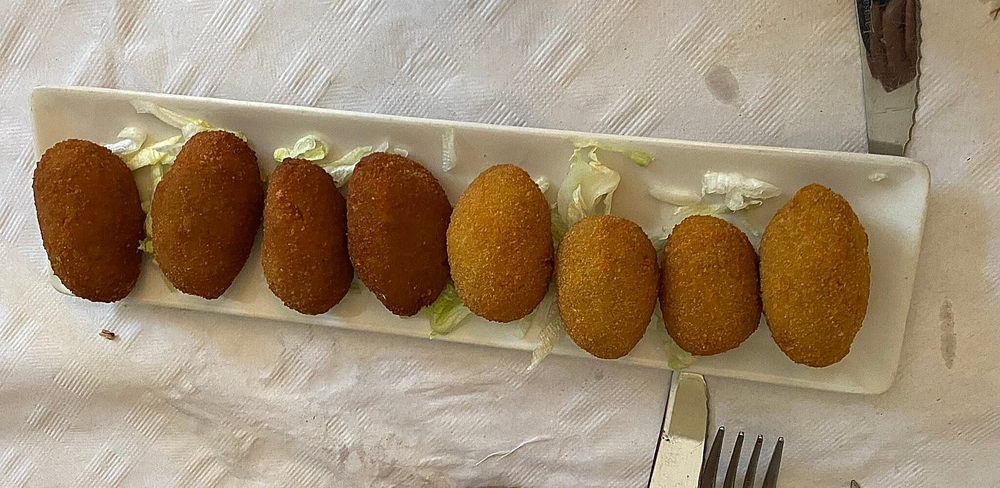
Para abrir boca, a compartir en el centro de la mesa.
Tomate, cebolla, pimiento, aceitunas y hortalizas de nuestra huerta
De jamón ibérico, hechas a diario en nuestra cocina
Salteados con ajo, guindilla y perejil fresco
Crujientes, con miel de caña de nuestra tierra
Cortado a cuchillo, con pan de pueblo
La cocina de cuchara, la que se hace despacio.
Receta tradicional de la casa, con garbanzos y hinojos de la huerta
Migas de pan candeal al estilo de la comarca
Guisado lento, con patatas de Coín
Receta familiar de varias generaciones
El plato de cuchara de toda la vida, como en casa de la abuela
A la brasa y al punto, con guarniciones de la huerta.
Con patatas de Coín fritas en aceite de oliva
Receta clásica de venta andaluza
A la brasa, con pimientos asados de la huerta
Guisado despacio, como antes
A la plancha, en su punto
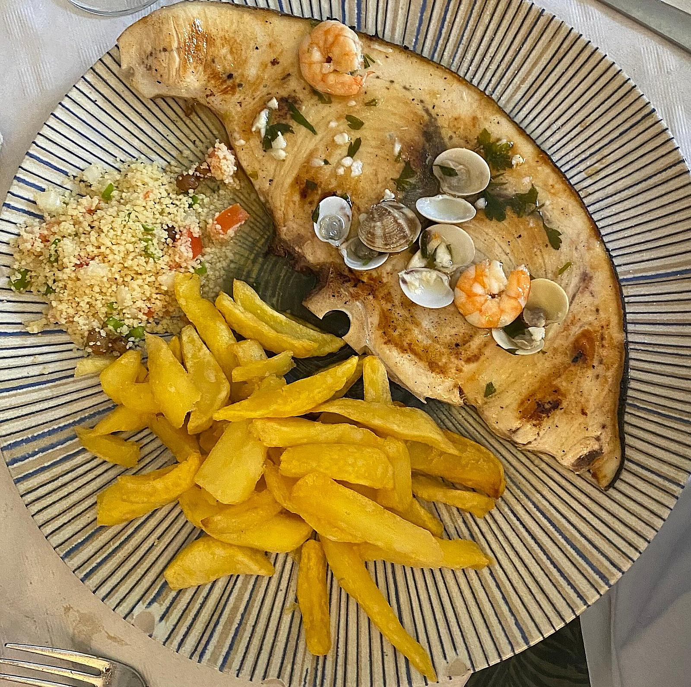
Fritura y plancha del día, con producto fresco.
Con gambas, cuscús y patatas de Coín
Rebozados al estilo de la casa, con limón
Recién fritos, crujientes por fuera
Con guindilla y ajo, en cazuela de barro
Selección del día, según mercado
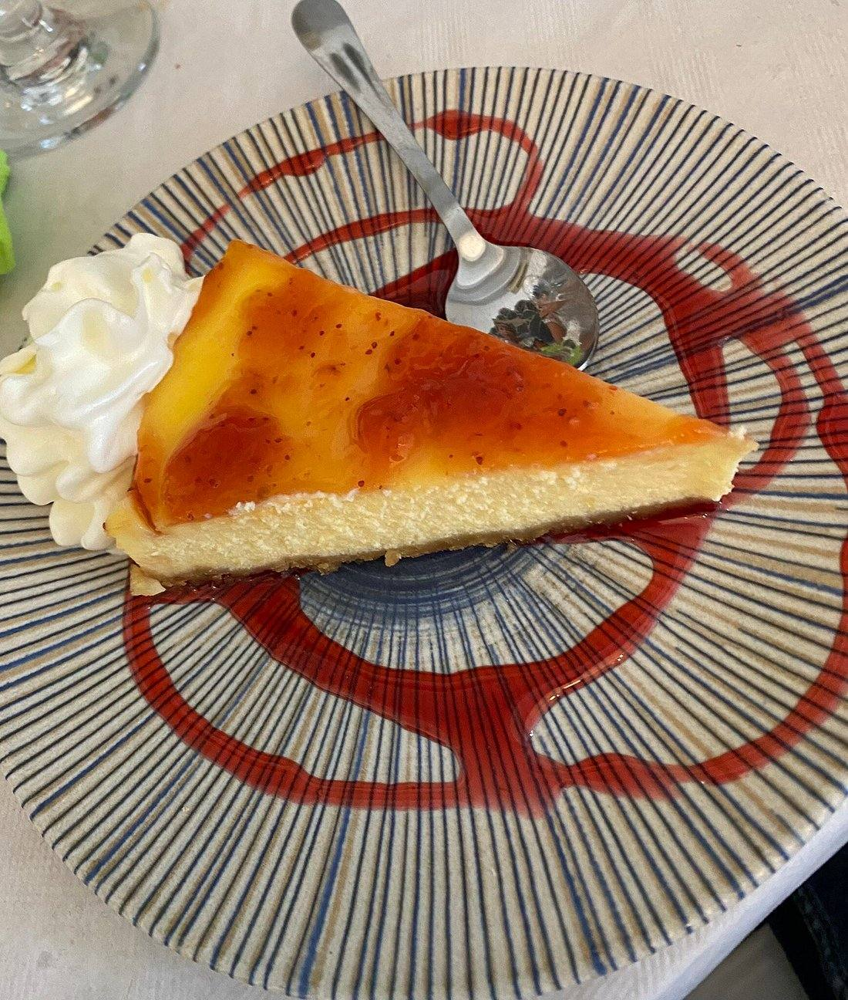
Todos hechos a diario en nuestra cocina.
Con mermelada artesana de la casa
Receta de siempre, con canela
Elaboración tradicional, disponible en temporada
Con caramelo hecho en casa
Distintos sabores según temporada
Precios orientativos, sujetos a temporada y mercado. Consulte alérgenos con nuestro equipo de sala.
Descargar carta completa en PDFNuestro patio y salones se visten de fiesta para acompañarle en las fechas que de verdad importan. Espacio, buena mesa y trato familiar para que usted solo tenga que disfrutar.
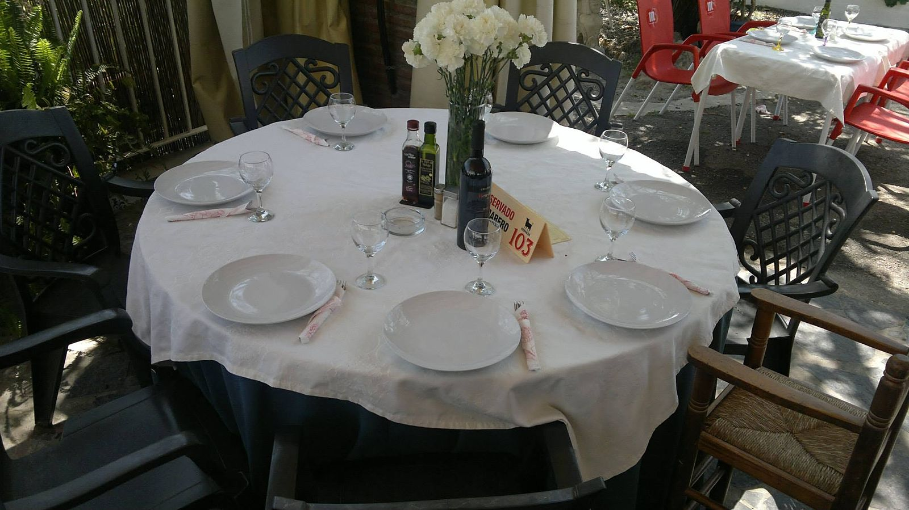
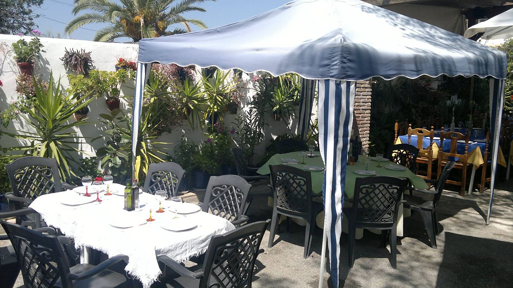
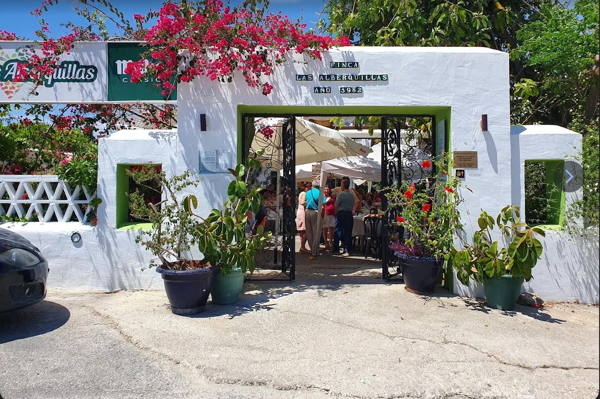
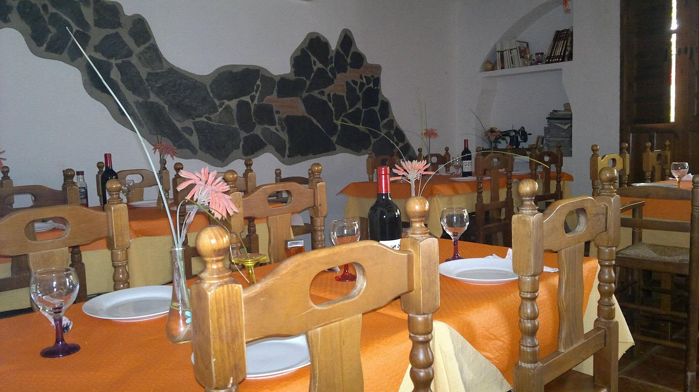
Le preparamos un presupuesto a medida sin compromiso.
Patio, cocina y mesa: un paseo visual por Las Alberquillas.
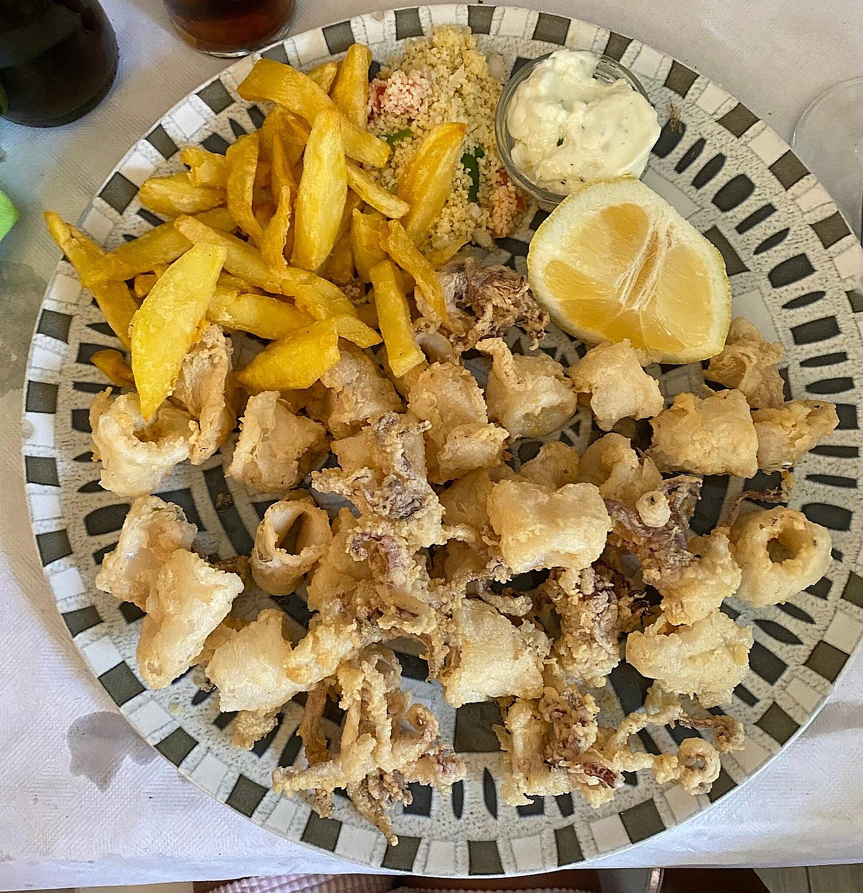
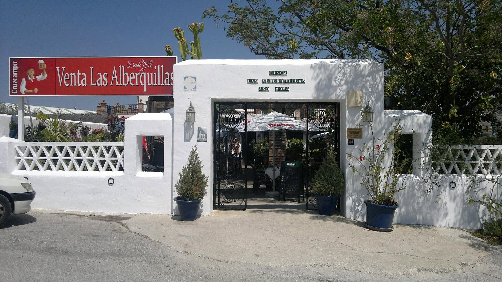
"Como en casa de mi abuela. Las raciones son generosísimas y el trato no puede ser más familiar. Repetimos siempre que podemos."María J. Google · Málaga
"El patio es una maravilla y la comida, de las de toda la vida. Las patatas fritas y las croquetas son un vicio. Volveremos seguro."Antonio R. TripAdvisor
"Celebramos la comunión de mi hija y todo salió perfecto. Se nota que llevan toda la vida haciendo esto, cuidan cada detalle."Encarna P. Google · Coín
Reserve por teléfono o WhatsApp; para grupos y celebraciones, cuanto antes, mejor.
A un paso del Valle del Guadalhorce, rodeados de campo y sierra, a solo unos minutos del centro de Coín.
Ctra. Coín–Alhaurín el Grande, km 1.5
29100 Coín (Málaga)
| Martes y miércoles | 13:00–16:00 y 20:00–22:00 |
| Viernes a domingo | 13:00–16:00 y 20:00–22:00 |
| Lunes y jueves | Cerrado |
952 45 29 93 · Móvil 641 53 40 80